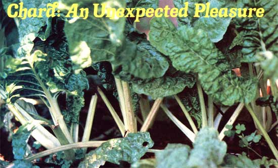

Chard?the ancestor of the modern-day beet?has been around longer than most folks realize (it was a favorite of the Greeks and Romans)...is easier to grow than most people think ( wherever lettuce can be cultivated, chard will thrive)...and tastes a whole lot better than most non-chard-eaters suspect!